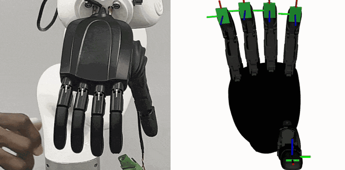
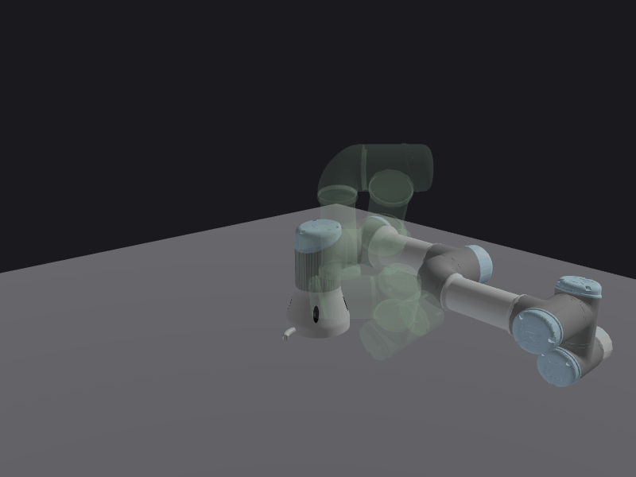

|
Click to enlarge.
Isaac Lab benchmark for task-rate robustness in learned dexterous manipulation. Three contact-rich tasks on a fixed-base Unitree G1 with a RealHand L6 hand, each with a scripted expert, a calibrated speed range, sampled demonstrations, a trained ACT policy, and success predicates evaluated from simulator state. A speedup factor divides the nominal durations of the manipulation phases, and the expert and learner are evaluated under matched initial conditions, so a drop in success isolates sensitivity to execution speed. Ships with a policy interface for evaluating your own policies, episode records, and the scripts that reproduce the paper.

ROS 2 control driver, tactile contact controller, robot description, bringup, and MoveIt configuration for the RealHand L6 dexterous hand, implemented over SocketCAN for ROS 2 Jazzy. The CAN protocol implementation and tactile contact controller are validated on a physical right-hand unit.
ROS 2 toolkit for sampling-based collision-free N-DoF (serial-chain) path planning. The base planner package uses FCL for collision checking, the Robotics Toolbox for Python for manipulator kinematics computation and an optional MuJoCo visualization backend, with the robot and scene described in the URDF standard and using ROS 2 parameters.
Contact-grounded SE(3)-equivariant flow matching for generating reach-aware, collision-free dexterous grasps. To our knowledge, EquiDexFlow is the first learned dexterous grasp generator to produce articulated hand configuration, fingertip contacts, contact normals, and friction-constrained contact forces jointly within one end-to-end SE(3)-equivariant architecture.

A lightweight Python library for parsing URDF files with FK/IK solvers, Jacobian analysis, and an interactive 3D visualizer.